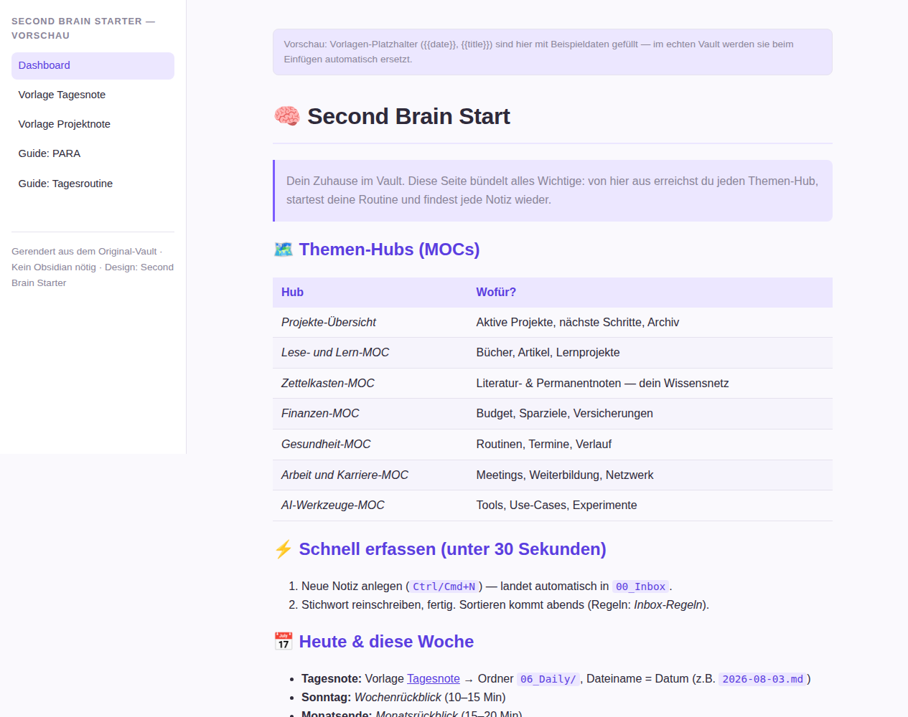

A working note-taking system in the time it takes to drink a coffee. Three folders, three rules, six templates (EN+DE) — afterwards you have a place for everything that crosses your mind.
Note: the mini vault now includes templates in English and German (v0.2) — pick whichever works for you. The full version ships with guides in both languages.
Ein funktionierendes Notiz-System in der Zeit, die ein Kaffee braucht. Drei Ordner, drei Regeln, sechs Vorlagen (DE+EN) — danach hast du einen Ort für alles, was dir durch den Kopf geht.
Hinweis: Der Mini-Vault enthält die Vorlagen jetzt auf Deutsch und Englisch (v0.2) — nimm, was dir liegt. Die Vollversion enthält Guides in beiden Sprachen.

No empty promise: the Mini-Vault is a fully set-up Obsidian folder. Unzip, open, start.
No folder chaos. Just what you really need:
No placeholder junk — notes you can use right away:
The real trick is in the system, not in the app:
Kein leeres Versprechen: Der Mini-Vault ist ein komplett eingerichteter Obsidian-Ordner zum Entpacken. Öffnen, loslegen.
Kein Ordner-Wirrwarr. Nur was du wirklich brauchst:
Kein Platzhalter-Müll, sondern sofort nutzbare Notizen:
Der eigentliche Trick steckt im System, nicht in der App:
Three steps, ten minutes. After that the system is yours — usable from tomorrow morning.
Free from obsidian.md — for Windows, macOS, Linux, iOS and Android.
Unzip, then choose “Open folder as vault” in Obsidian. Settings and design are pre-configured.
Copy the daily note and project note from the templates. Done — start the 17-minute routine tomorrow (7 minutes in the morning, 10 in the evening).
Drei Schritte, zehn Minuten. Danach gehört das System dir — täglich nutzbar ab morgen früh.
Kostenlos von obsidian.md — für Windows, macOS, Linux, iOS und Android.
ZIP entpacken, in Obsidian „Open folder as vault“ wählen. Einstellungen und Design sind bereits vorkonfiguriert.
Tagesnote + Projektnote aus den Vorlagen kopieren. Fertig — ab morgen die 17-Minuten-Routine (7 morgens, 10 abends).
This is what the vault looks like in Obsidian — rendered here as an interactive preview (light & dark follow your system setting).
So sieht der Vault in Obsidian aus — hier als interaktive Vorschau gerendert (Light & Dark je nach System-Einstellung).
The preview shows the full version (Second Brain Starter) with dashboard, templates and method guides. Open the demo in a new tab →
Die Vorschau zeigt die Vollversion (Second Brain Starter) mit Dashboard, Vorlagen und Methodik-Guides. Demo in eigenem Tab öffnen →
The Mini-Vault is the entry point. Want more? Get the complete system — available soon.
Der Mini-Vault ist der Einstieg. Wer mehr will, bekommt das komplette System — in Kürze verfügbar.
Your AI assistant keeps forgetting — and sometimes it deletes your notes. The free Verified Memory Vault fixes both: a structured Obsidian memory for AI agents, plus two tools that check your vault's health and block mass deletions before they happen.
Dein KI-Assistent vergisst ständig — und löscht manchmal gleich deine Notizen mit. Der kostenlose Verified Memory Vault behebt beides: ein strukturiertes Obsidian-Gedächtnis für KI-Agenten, dazu zwei Werkzeuge, die die Hygiene deines Vaults prüfen und Massenlöschungen stoppen, bevor sie passieren.
Be the first to know when the Second Brain Starter launches — one email, no newsletter spam.
Your email is used exclusively for the waitlist notification — no sharing, no spam. Signing up opens your email program with a pre-filled message; just hit send.
Sei als Erster informiert, wenn der Second Brain Starter erscheint — einmalige Nachricht, kein Newsletter-Spam.
Deine E-Mail wird ausschließlich für die Wartelisten-Benachrichtigung verwendet — keine Weitergabe, kein Spam. Die Anmeldung öffnet dein E-Mail-Programm mit einer vorgefertigten Nachricht; du musst sie nur abschicken.
Yes. The Mini-Vault is a free entry point — no subscription, no hidden costs, no account required. License: personal, non-commercial use (included in the ZIP).
No. Obsidian is free. Install it, open the vault and read the three rules — the guides are written without jargon.
The Mini-Vault contains 3 folders, 3 rules and 6 templates (3 English + 3 German). The full version (Second Brain Starter) adds 8 topic hubs, 14 templates, 6 method guides and the complete design. It launches soon — the waitlist will let you know first.
It is used only for the one-time notification when the full version launches. No spam, no sharing with third parties.
Ja. Der Mini-Vault ist ein kostenloser Einstieg — kein Abo, keine versteckten Kosten, keine Konto-Pflicht. Lizenz: persönliche, nicht-kommerzielle Nutzung (liegt dem ZIP bei).
Nein. Obsidian ist kostenlos. Du installierst es, öffnest den Vault und liest die drei Regeln — die Guides sind ohne Fachjargon geschrieben.
Der Mini-Vault enthält 3 Ordner, 3 Regeln und 6 Vorlagen (3 Deutsch + 3 Englisch). Die Vollversion (Second Brain Starter) ergänzt 8 Themen-Hubs, 14 Vorlagen, 6 Methodik-Guides und das vollständige Design. Sie erscheint in Kürze — die Warteliste informiert dich zuerst.
A free companion project for AI users: a structured Obsidian vault that gives AI assistants a reliable memory, with tools that check vault health and prevent mass deletions. Get it on GitHub.
Sie wird nur für die einmalige Benachrichtigung zum Erscheinen der Vollversion genutzt. Kein Spam, keine Weitergabe an Dritte.